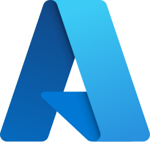
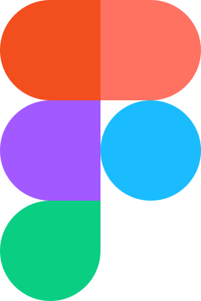

● Olá, eu sou a Renaê
Transformo dados em decisões — e dashboards em produtos.
Atuo na liderança e construção de soluções analíticas globais, conectando estratégia de dados, engenharia, Power BI e UX/UI para transformar informações complexas em experiências que geram valor para o negócio.
Do discovery à entrega: visão de produto, profundidade técnica e cuidado com quem usa os dados.
SOBRE MIM
Técnica para construir.
Visão para liderar.
Sou profissional de Data & Analytics, com mais de 10 anos de experiência na interseção entre tecnologia, estratégia e experiência do usuário.
Minha abordagem une liderança técnica e visão de produto: estruturo requisitos e prioridades, conecto engenharia e front end analítico e acompanho a validação e a evolução das soluções.
O QUE EU FAÇO
Conectar produto, dados e experiência
Da pergunta de negócio à solução em uso, com clareza sobre o que construir, como entregar e por que importa.
FERRAMENTAS & TECNOLOGIAS
Da engenharia à experiência


PROJETOS SELECIONADOS
Da intenção à experiência em uso
Cada produto começa com uma pergunta de negócio — não com um gráfico.
MEU PROCESSO
Construir com intenção. Evoluir com contexto.
Uma jornada que conecta necessidades de negócio, decisões técnicas e experiência de uso.
RECOMENDAÇÕES
Confiança construída em equipe
VAMOS TRABALHAR JUNTOS
Seu próximo produto de dados começa com uma boa conversa.
Vamos conectar estratégia, engenharia e experiência para dar forma ao seu desafio de analytics.